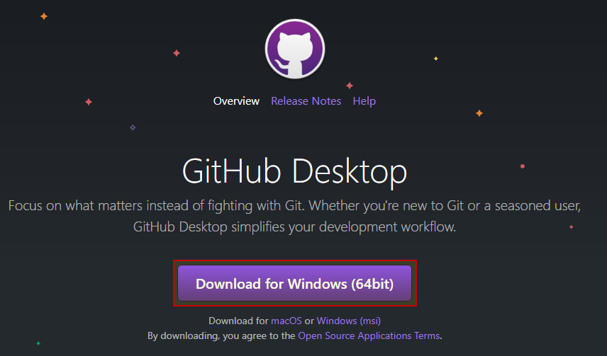
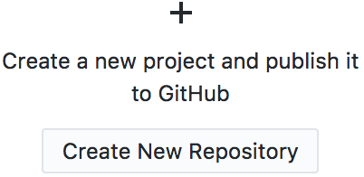

-
En GitHub-konto
-
Last ned og installer GitHub Desktop-appen
-
Create a new GitHub project
Første ting er først: skaff deg en GitHub-konto! Du vil ikke ha tilgang til gratis hosting eller andre fantastiske funksjoner GitHub har å tilby uten en.
Dette er appen vi skal bruke for å få opp koden vår på GitHub. Den er enkel å bruke, så ikke bekymre deg; brukergrensesnittet er enkelt å lære!
Før vi laster opp koden vår til GitHub, må vi først br gjøre GitHub Desktop oppmerksom på prosjektfilene våre
Vi gjør dette ved å opprette en ny Repository-mappe, og deretter kopiere nettsidefilene våre til denne nye mappen.
Åpne opp GitHub Desktop-appen og klikk på "Opprett nytt arkiv"-knappen.
Når dialogvinduet "Opprett et nytt arkiv" vises, fyll ut “Name” text input as:
[username].github.io
Det er veldig viktig å navngi depotet ditt på denne måten;
dette vil fortelle GitHub å være vert for filene i dette prosjektet automatisk og vise dem når noen peker nettleseren sin til
https://[username].github.io/
Dette vil være nettadressen du deler når nettstedet ditt er klart til å publiseres og publiseres!

“Create Repository” knapp. For nå vil vi bare lage mappen som GitHub Desktop vil gjenkjenne som en mappe den kan fungere med.
For veiledningens skyld, la oss beskrive denne nye mappen som GitHub Repository-mappen.